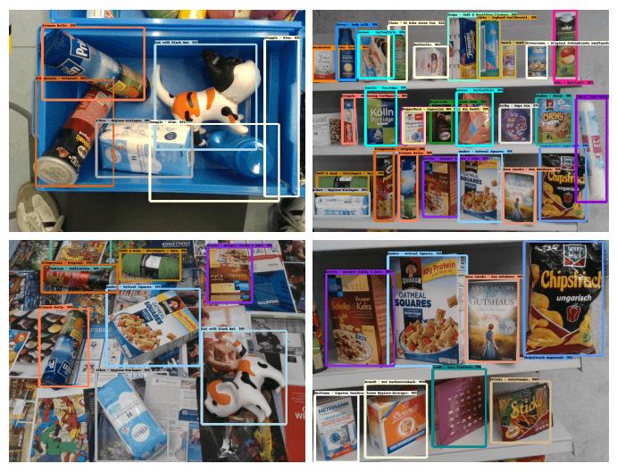
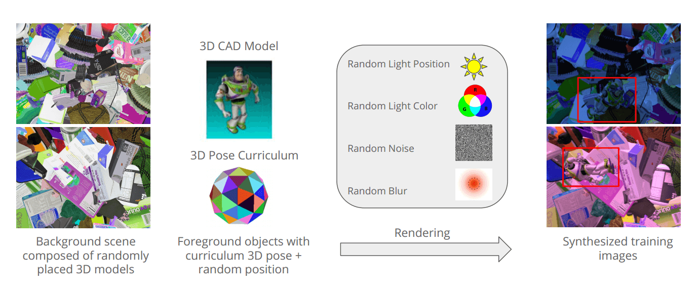
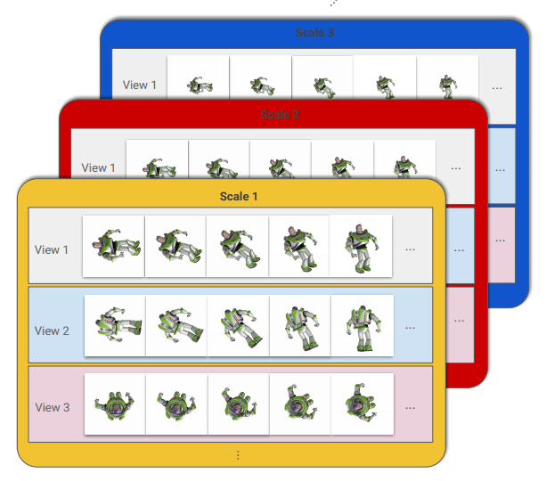
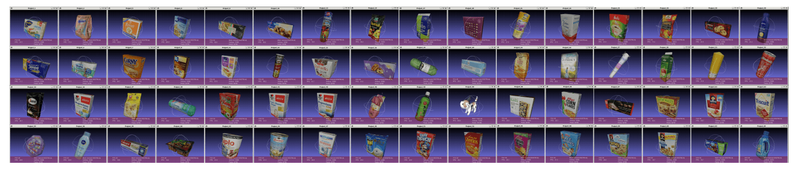

资源
全文
Abstract
-
利用 3D 背景模型的大型数据集，并使用全域随机化 full domain randomization 对其进行密集渲染。这产生了具有逼真形状和纹理的背景图像，我们在其上渲染感兴趣的对象。
-
在训练过程中，数据生成过程遵循课程学习 (Curriculum learning, CL)（按照样本简单程度由简单到复杂依次进行训练），以确保在所有可能的姿态和条件下，所有前景模型都以越来越复杂的方式平等地呈现给网络。
-
因此，我们完全控制了基础统计数据，并在训练的每个阶段创建了最佳训练样本。使用一组 64 个零售对象，我们证明了我们的简单方法能够在具有挑战性的评估数据集上训练出优于用真实数据训练的模型的检测器。
1. Introduction

-
常用现代深度卷积架构：Faster R-CNNs、SSD、R-FCN、Yolo9000 和 RetinaNet。
-
在实践中成功应用这些方法的主要挑战仍然存在，即如何弥合合成图像和真实图像之间的所谓“领域差距”。在合成数据上训练并在真实数据上评估的方法通常会导致性能恶化。为了应对这一挑战，
- 一些方法专注于提高训练数据的真实性
- 混合合成数据和真实数据
- 利用具有冻结的预训练特征提取器的架构
- 使用领域自适应或迁移学习。
“领域随机化”是缩小真实数据和合成数据之间差距的另一种策略。作者假设，合成过程的高度随机化会产生更好的泛化效果，因为训练的模型将现实视为其训练的更大域空间的一个实例。他们在简单场景中对一些对象显示了有希望的首次结果。
在本文中，
- 我们介绍了一种创建用于对象检测的纯合成训练数据的新方法。
- 我们利用 3D 背景模型的大型数据集，以完全域随机化的方式密集渲染这些数据集来创建我们的背景图像。
- 因此，我们能够生成局部逼真的背景杂波，这使得我们训练的模型对环境变化具有鲁棒性。
- 在这些背景图像之上，我们渲染感兴趣的 3D 对象。
- 在训练过程中，数据生成过程遵循课程策略，该策略确保所有前景模型在所有可能的姿态下以越来越复杂的方式平等地呈现给网络。
- 最后，我们添加了随机照明、模糊和噪声。
我们的方法
-
不需要复杂场景组成，
-
不需要中的困难逼真的图像生成，
-
不要求真实的背景图像来提供必要的背景杂波，并且可以很好地扩展到大量对象和一般检测能力。
2. Related Work
提高检测性能的一种常见方法是通过添加合成数据来扩展真实的训练数据集。
-
混合合成数据集和真实数据集
-
遵循图像合成方法：通过组合来自不同图像的剪切对象来创建合成图像。
-
其他工作线利用照片逼真的渲染和逼真的场景合成，通过合成尽可能接近真实世界的图像来克服领域差距。虽然这些方法已经显示出有希望的结果，但它们面临着许多严峻的挑战。
- 首先，生成照片逼真的训练图像需要复杂的渲染管道和大量的 CPU/GPU 资源。
- 其次，逼真的场景构图本身就是一个难题，通常是手工完成的。
- 第三，用于创建合成场景的现代渲染引擎严重利用人类感知系统来欺骗人眼。
然而，这些技巧不一定适用于神经网络，因此需要付出更多的努力来弥合领域差距。
-
生成对抗性网络带来了相当大的额外复杂性，因为它很难设计和训练，尚未应用于检测任务。
-
利用领域自适应或迁移学习来弥合合成领域和真实领域之间的领域差距。这可以通过耦合两个预测因子来实现，每个域一个，或者通过组合来自两个域的数据来实现。
领域自适应和迁移学习的应用远远超出了从合成数据到真实数据的迁移。尽管如此，它们仍然需要大量的真实数据。
我们的方法属于领域随机化的范畴。其基本思想是用非现实的变化来改变模拟数据，使现实看起来只是一种变化。
-
Related Work 结合了领域随机化和照片真实感渲染。生成两种类型的数据：
-
首先，具有随机干扰和变化的合成图像，以真实照片为背景，看起来不自然；
-
其次，使用物理引擎对随机生成的场景进行真实感渲染，以确保物理合理性。
这两种类型的数据的组合比仅一种数据源产生了很大的改进，并允许网络推广到看不见的环境。
-
-
Related Work 使用结构化域随机化，这允许网络将上下文考虑在内。在街道场景等结构化环境的背景下，这会产生最先进的结果，但不适用于从盒子里挑选物品等场景，在这些场景中，不同物体的位置之间没有明确的空间关系。
3. Method
在本节中，我们展示了我们用于生成合成训练数据的管道，如下图所示。与之前的方法相反，我们不试图通过混合合成图像和真实图像来减少领域差距，而是创建纯合成的训练样本。
每个训练样本都是通过混合三个图像层生成的：
- 一个纯合成的背景层
- 一个按照课程策略构建的前景对象层
- 最后一个包含遮挡物的层。

对于每个训练图像，我们通过从背景对象数据库中随机放置 3D 模型来生成背景场景，直到结果图像中的每个像素都被覆盖为止。
然后，我们将一个或多个前景对象添加到场景中；每个对象在图像中随机定位，但遵循旋转和缩放的确定时间表。
最后，我们使用简单的 Phong 照明渲染场景，使用随机放置的光源和随机灯光颜色，然后在图像中添加随机噪声和随机模糊。我们还使用对象的 3D 模型和相应的姿势来计算紧密拟合的边界框。
3.1. Background Layer Generation
背景生成方法的设计遵循三个原则：
- 最大限度地增加背景杂波
- 最大限度地减少向网络显示两次相同背景图像的风险
- 创建具有与前景层中的对象相似的结构的背景图像。
我们的实验表明，这些原理有助于创建训练数据，使网络能够学习对象的几何和视觉外观，同时最大限度地减少学习区分合成前景对象和背景对象的机会，这些对象只是具有不同的属性，如不同的对象大小或噪声分布。
背景层由 15k 个纹理 3D 模型的数据集生成，该数据集与前景对象数据集不相交。所有 3D 背景模型最初都会被降级和缩放，以使它们适合一个单位球体。
-
通过依次选择背景中没有渲染其他对象的区域，并在该区域上渲染随机背景对象来创建的。每个背景对象都以随机姿势渲染，并重复该过程，直到整个背景被合成背景对象覆盖。
-
背景生成的关键是投影背景对象的大小，该大小是根据前景对象的大小确定的。
-
生成了一个随机的各向同性缩放 ，在渲染它们之前，我们将其应用于我们的统一 3D 模型。我们使用缩放来创建对象，使得它们对图像平面的投影大小对应于平均前景对象的大小。
-
更具体地，我们计算比例范围 ，其表示可以应用于对象的比例，使得它们出现在与平均前景对象大小相对应的大小的 内。
-
对于每个背景图像，我们然后创建一个随机子集 ，以确保我们不仅创建对象均匀分布在所有大小上的背景图像，而且创建对象主要是大或小对象的背景图像。各向同性缩放值 现在从 随机绘制，使得图像中的背景对象大小均匀分布。
-
对于每个背景场景，我们还将每个对象的纹理转换为 HSV 空间，随机更改色调值并将其转换回 RGB，以使背景多样化，并确保背景颜色分布良好。
3.2. Curriculum Foreground Layer Generation

对于每个前景对象，我们
-
首先生成一大组姿势，均匀覆盖我们希望能够检测相应对象的姿势空间。为此，通过递归划分二十面体（最大的凸正多面体）来生成旋转。这种方法在球体上产生均匀分布的顶点，每个顶点代表由两次平面外旋转定义的对象的不同视图。
-
除了这两个平面外旋转，我们还使用了相等采样的平面内旋转。
-
此外，我们对渲染前景对象的距离进行采样，该距离与其投影大小成反比，以确保投影对象的像素覆盖率在连续缩放级别之间近似线性变化。
与背景生成相反，我们基于课程策略来渲染前景对象。这意味着有一个确定的时间表，每个对象和姿势应该在哪个步骤渲染。
-
我们从离相机最近的刻度开始，逐渐移动到离相机最远的刻度。
-
因此，每个对象最初在图像中看起来最大，因此对于网络来说更容易学习。
随着学习的进行，对象变得更小，网络更难学习。
-
-
对于每一个尺度，我们迭代所有可能的平面外旋转，对于每一次平面外旋转我们迭代所有平面内旋转。
-
一旦我们有了缩放、平面外旋转和平面内旋转，我们就会遍历所有对象，并使用均匀分布在随机位置以给定姿势渲染每个对象。
-
在处理完所有对象后，在所有平面内和平面外旋转时，我们移动到下一个缩放级别。
对于渲染，我们允许在图像边界处裁剪高达 的前景对象。此外，我们允许每对前景对象之间的重叠高达 。对于每个对象，我们随机尝试将其放置在前景场景中 次。如果由于违反裁剪或重叠约束而无法将其放置在场景中，我们将停止处理当前前景场景，并从下一个场景开始。对于随后的前景场景，我们从上一个场景结束的地方开始。
3.3. Occlusion Layer Generation
我们还生成了一个遮挡层，允许背景数据集中的随机对象部分遮挡前景对象。这是通过确定每个渲染的前景对象的边界框并通过在该边界框内的统一随机位置渲染随机选择的遮挡对象来实现的。遮挡对象被随机缩放，使得其投影覆盖对应前景对象的一定百分比（在前景对象的 到 的范围内）。
遮挡对象的姿势和颜色以与背景对象相同的方式随机化。
3.4. Postprocessing and Layer Fusion
有了背景、前景和遮挡层，我们将所有三个层融合为一个组合图像：遮挡层在前景层的顶部渲染，结果在背景层的顶部呈现。
此外，我们添加了在灯光颜色中具有随机扰动的随机光源。最后，我们添加白噪声并用高斯核模糊图像，其中核大小和标准偏差都是随机选择的。
因此，背景、前景和遮挡部分共享相同的图像属性，这与混合真实图像和合成渲染的其他方法相反。这使得网络不可能仅仅根据其域特定的属性来区分前景和背景。
4. Experiments
在本节中，我们报告了详细的实验和结果，这些实验和结果为我们的策略带来了好处。在描述了我们的实验设置后，我们证明了合成数据生成可以免费训练最先进的架构，其性能优于在真实数据上训练的模型。
此外，我们通过消融实验展示了课程与随机姿势生成的好处，背景对象相对于前景对象的相对比例的影响，每张图像渲染的前景对象数量的影响，使用合成背景对象的好处，最后是随机颜色和模糊的影响。
4.1. 3D models
在我们所有的实验中，我们专注于检测 64 个不同的前景对象实例，这些实例在颜色、纹理（均匀颜色与高度纹理）、3D 形状和材料（反射与非反射）方面显示出非常不同的特性。

这些物品大多是超市里的经典零售物品。除了这些感兴趣的对象外，我们还利用了一大组来自不同应用领域的约 15k 个对象，如用于构成背景的工业对象、家用对象或玩具。对于每个前景或背景对象，我们使用内部 3D 扫描仪生成了一个有纹理的 3D 模型。
4.2. Real Training and Evaluation Data
真实数据集是自己用相机拍的。
4.3. Network Architecture
使用了流行的 Faster R-CNN 架构和 Inception ResNet 特征提取器。特征提取器的权重已经在 ImageNet 数据集上进行了预训练。我们的实现使用了谷歌的 Faster R-CNN 的公开开源实现。
4.4. vs. Real Experiments
Synthetic 效果比 Real 的好。
4.5. Ablation Experiments
消融实验。
4.5.1 Curriculum vs. Random Training
4.5.2 Relative Scale of Background Objects
4.5.3 Amount of Rendered Foreground Objects
4.6. Effects of Background Composition
4.6.1 Further Ablation Experiments
我们研究了图像生成管道中单个步骤的影响。我们发现，模糊和随机灯光颜色的影响最大，其次是允许较少的随机灯光颜色变化。随机改变相机的焦距是最不重要的。
5. Discussion
我们坚信，完全合成的数据生成方法对于在快速变化的现实世界环境中部署和维护大规模目标检测管道至关重要。
6. Conclusion
好使。